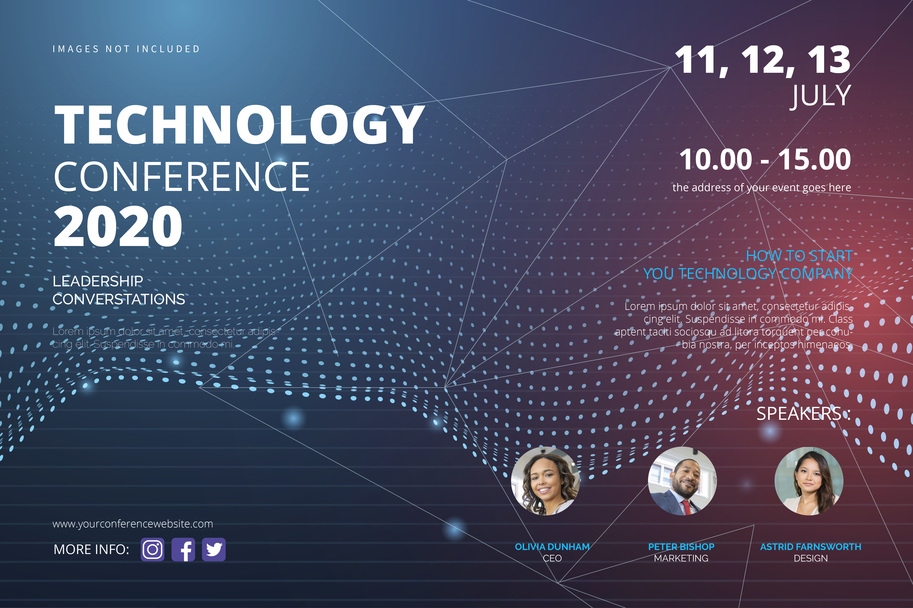

History
TechCon began in 2010 as a small gathering of technology enthusiasts and has grown into one of the most respected tech conferences worldwide, attracting innovators and leaders from every corner of the industry.

TechCon began in 2010 as a small gathering of technology enthusiasts and has grown into one of the most respected tech conferences worldwide, attracting innovators and leaders from every corner of the industry.

Our mission is to inspire innovation, connect technology professionals, and provide a platform for sharing knowledge and breakthroughs in the tech world.

Over the years, TechCon has hosted numerous influential figures in technology. Here are a few notable speakers:
Dr. Jane Smith: Pioneering research in artificial intelligence and machine learning applications.

Mr. John Doe: Leader in cybersecurity awareness and innovative protective solutions.
Ms. Emily Zhang: Expert in robotics and automation, inspiring the next generation of engineers.